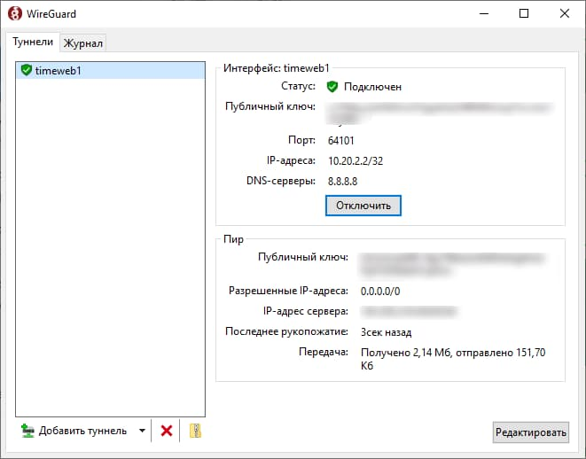

Настройка для Windows
-
1. Загрузите приложение Wireguard c
официального сайта.
-
2. Скачайте конфигурационный файл,
полученный в телеграм-боте.
-
3. В приложении WireGuard нажмите кнопку
«Импорт туннелей из файла» (либо
«Добавить туннель») и выберите файл с
расширением .conf.
-
4. Нажмите кнопку «Подключить» для
соединения с VPN-сервером.
